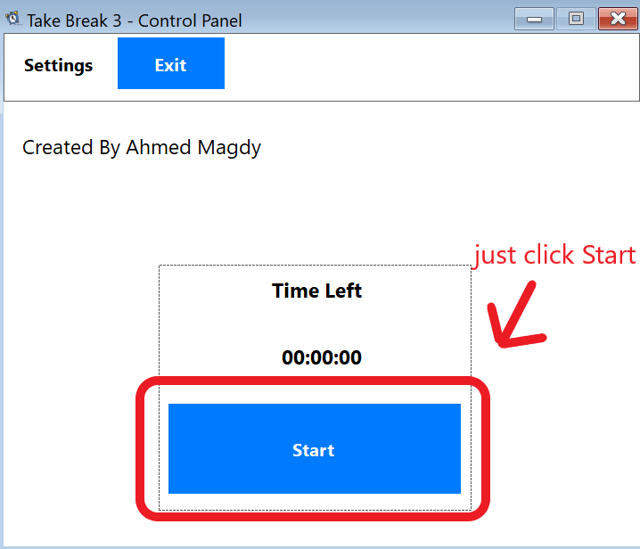
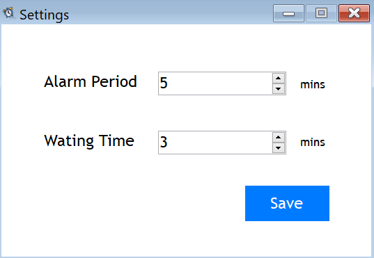

Starting the Timer

Changing Settings
You can just set the periods as you wish but Alarm Period will be at least 5 mins and Waiting Time will be at least 3 mins and then hit save and the changes will take effect immediately

Running the Application in the Background
You can just close the window using the normal close button a notification will popup indicating that the application will be running in the background.